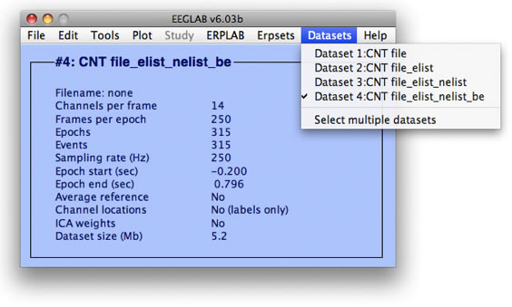
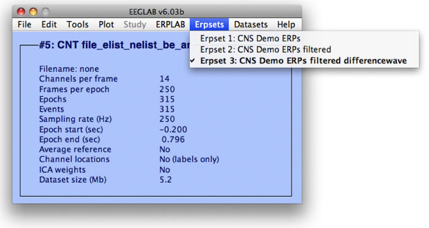

EEGLAB uses a data structure called EEG to store the EEG data and associated information from a single recording session. This structure is inherited and extended by ERPLAB, and an analogous structure called ERP is used by ERPLAB to store averaged ERP waveforms. ERPLAB also uses an EVENTLIST structure that provides a link between the EEG and ERP structures. These data structures are at the core of the operation of ERPLAB. You will access these structures directly if you write Matlab scripts, and you will access them indirectly when you use the GUI.
Datasets and the EEG Structure. EEGLAB typically maintains a single instance of the EEG structure in RAM. Most EEGLAB signal processing functions operate on the EEG structure, and the output of these processes is typically a new EEG structure (e.g., containing a filtered version of the original EEG data). Because a single set of EEG data can take up a large amount of memory, and because Matlab tends to use memory inefficiently, it can be problematic to keep multiple sets of EEG data active in memory at one time. Consequently, EEGLAB defines the concept of a dataset, which is essentially a pointer to an EEG structure. That is, many datasets can be loaded into EEGLAB, each of which contains the information from a previous instance of the EEG structure, but only one is "active" at a given time (and is accessed via the EEG structure).
Each processing step typically operates on the current dataset, creates a new dataset based on some set of operations, and then makes the new dataset the current dataset. For example, filtering the EEG data in the current dataset would create a new dataset, which would then become the current dataset. All of the loaded datasets are available from the Datasets menu (see screenshot below), which allows the user to select which dataset is the current dataset (and therefore available from the EEG structure). In addition, datasets can be opened, saved, and cleared from the File menu. This is an extremely convenient system, because it allows the user to apply a series of processing steps to a set of EEG data, save the intermediate steps as cached datasets (with or without storing them as files on disk) and then quickly move back and forth between them.

Bins, ERPsets, and the ERP Structure. ERPLAB uses a similar set of conventions to store and manipulate averaged ERP waveforms. To understand how this works, it is first necessary to understand the concept of a bin (which was inherited from ERPSS). A bin is a set of averaged ERP waveforms, one for each electrode site, which were created by averaging together a specific set of trials. A simple oddball experiment, for example, might have one bin for the targets and another bin for the standards. However, a sophisticated experiment might have dozens of different bins, with a given bin being something like "Digits preceded by letters followed by a correct response between 200 and 1000 ms, in a condition in which digits are rare and letters are frequent."
In some ERP analysis systems (e.g., Neuroscan), a bin would be equivalent to a single averaged ERP file. However, this can lead to a huge number of different files for each subject, making it difficult to keep track of everything. ERPLAB, in contrast, can store an unlimited number of bins together in an ERPset (analogous to a dataset), and each data processing operation is typically applied to all of the bins in the currently active ERPset. In one step, for example, you could filter all of the bins in a file. This saves time and reduces errors.
The currently active ERPset is accessed via a structure named ERP (analogous to the EEG structure). A single bin within an ERP structure is an Electrodes x Time Points matrix. The set of bins within an ERP structure adds a third dimension to this matrix (Electrodes x Time Points x Bins). In addition to this 3-D structure, the ERP structure contains a header that specifies the names of the bins, the names and locations of the electrodes, the sampling rate, etc. All of the bins within an ERP structure must have the same number of electrodes and time points so that the data matrix is a complete multidimensional array. This makes it easy to apply Matlab's matrix operations to an entire ERPset. Each ERPLAB processing step that operates on an ERPset creates a new ERPset (e.g., filtering, re-referencing, creating difference waves). One ERPset is the current ERPset at a given time (accessed via the ERP structure), but many ERPsets may be loaded at a given time, and the user can select among them via the ERPsets menu (see screenshot below).

Event Codes. ERPLAB has also inherited the concept of "event codes" from ERPSS. An event code is just like a "trigger code," "stimulus code," or "marker" in other systems, in that it marks the time of a given event and the identity of that event. However, it is not quite the same as in some systems, because the software does not make any internal distinction between stimulus events, response events, or any other kind of events. The user has total control over how a given event is treated, which provides greater flexibility.
The EVENTLIST Structure. An EVENTLIST is a simple and compact structure created by ERPLAB that contains information about all of the events in an EEG structure (typically stimuli and responses, but it can also include eye movements, EMG bursts, etc.). ERPLAB has powerful tools for assigning events to bins, and the EVENTLIST structure plays a key role in this process. It can also be used as a convenient way of inserting, deleting, and changing event codes (e.g., merging response information that was saved by a stimulus presentation program with EEG data stored in a dataset).
Note for ERPSS users: The EVENTLIST combines the functionality of the log and binlist files. It contains all event information along with information about the bin or bins to which each event is assigned.
| <<Basic ERPLAB Processing Steps | Table of Contents | Using EEGLAB>> |